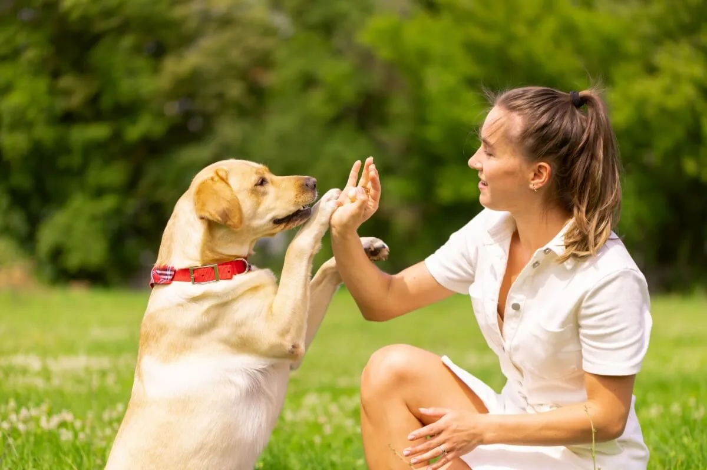
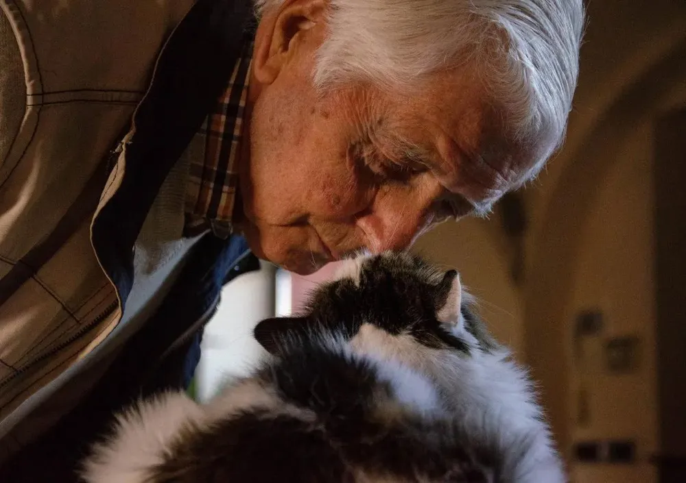

Informações que não se encontram
Quem perde um animal precisa divulgar o desaparecimento. Quem encontra um pet precisa descobrir a quem recorrer. Sem um ponto de conexão, essa comunicação pode se perder.
O AchePet é uma plataforma criada para ajudar animais perdidos a encontrarem o caminho de volta para casa.
Nosso objetivo é facilitar a comunicação entre pessoas que perderam seus animais e aquelas que encontraram um pet, reunindo informações importantes em um só lugar.
Acreditamos que, com a ajuda da comunidade, podemos aumentar as chances de cada animal reencontrar sua família.


Nossa missão é conectar pessoas para facilitar o reencontro entre animais perdidos e suas famílias. Por meio da divulgação de informações sobre pets desaparecidos e encontrados, o AchePet busca tornar a busca mais simples, rápida e acessível.
Queremos incentivar a colaboração da comunidade, ajudando tutores a encontrar seus animais e oferecendo a todos uma forma de contribuir para que mais pets voltem para casa.
Um compartilhamento pode fazer a diferença. Juntos, podemos aproximar famílias de quem elas tanto procuram.
A perda de um animal envolve muito mais do que uma busca. Envolve famílias preocupadas, informações dispersas e pessoas que poderiam se ajudar, mas nem sempre conseguem se encontrar.
Foi pensando nessa dificuldade que surgiu o AchePet.
Quem perde um animal precisa divulgar o desaparecimento. Quem encontra um pet precisa descobrir a quem recorrer. Sem um ponto de conexão, essa comunicação pode se perder.
O AchePet reúne informações sobre animais perdidos e encontrados em uma plataforma, facilitando a divulgação dos casos e a busca por informações.
Queremos facilitar a colaboração entre pessoas e ampliar as oportunidades de um animal reencontrar sua família. Cada informação compartilhada pode contribuir para essa busca.
Faça parte dessa rede e ajude a transformar uma busca em um reencontro.
Cadastrar animal